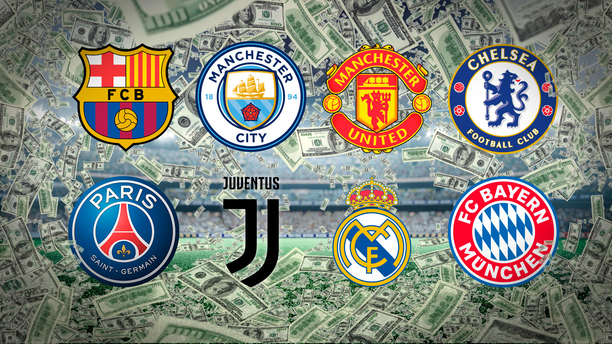

Descripción del sitio web
Este sitio web está dedicado a explorar diversos aspectos del fútbol, el deporte más popular a nivel mundial. A través de diferentes secciones, se ofrece una visión completa que abarca desde sus orígenes históricos hasta su impacto cultural en la sociedad contemporánea. Los visitantes podrán aprender sobre las reglas fundamentales que rigen el juego, conocer a las leyendas que han dejado una huella imborrable en la historia del fútbol, descubrir los clubes más emblemáticos y entender cómo este deporte ha influido en diferentes culturas alrededor del mundo.
Historia del fútbol
Aunque existen juegos antiguos parecidos, el fútbol tal como lo conocemos nació en Inglaterra en el siglo XIX. Desde entonces, se ha convertido en el deporte más jugado y seguido del planeta. La FIFA, creada en 1904, organiza torneos como el Mundial, donde los mejores equipos del mundo compiten por un trofeo.

Reglas básicas del juego
El fútbol se juega entre dos equipos de once jugadores cada uno. El objetivo es meter el balón en el arco rival, respetando reglas como no tocar el balón con las manos (salvo el arquero). Cada partido tiene dos tiempos de 45 minutos, y el equipo que más goles marque es el ganador.
Los mejores jugadores de la historia
Existen muchas leyendas del fútbol, como Pelé, Diego Maradona, Lionel Messi y Cristiano Ronaldo. Cada uno ha marcado historia con sus goles, habilidades y logros en torneos internacionales. Sus jugadas aún son recordadas y admiradas por fanáticos de todas las edades.

Equipos más famosos del mundo
Clubes como el Real Madrid, FC Barcelona, Manchester United y Bayern Múnich son algunos reconocidos a nivel mundial por sus títulos y fanáticos. Estos equipos han formado parte de la historia del fútbol con sus jugadores estrella, entrenadores legendarios y partidos inolvidables.
Fútbol y cultura
El fútbol no solo es deporte, también es cultura. Influye en la música, el arte, la moda y la identidad de muchas naciones. Es una forma de expresión y unión entre personas de diferentes lugares, idiomas y tradiciones. El fútbol tiene el poder de emocionar y conectar al mundo entero.
Tácticas y formaciones
En el fútbol, las tácticas determinan cómo se posicionan los jugadores. Algunas de las más famosas son el 4-4-2, el 4-3-3 y el 3-5-2. Cada formación tiene sus ventajas y se adapta según el rival.
| Formación | Estilo de juego | Ventajas |
|---|---|---|
| 4-4-2 | Equilibrado entre defensa y ataque | Estabilidad y orden táctico |
| 4-3-3 | Ofensivo, con extremos veloces | Mayor presión al rival |
| 3-5-2 | Control del medio campo | Versatilidad táctica |
Fútbol y salud física
Jugar fútbol regularmente mejora la salud cardiovascular, fortalece músculos y huesos, y ayuda a mantener un peso saludable. Además, fomenta el trabajo en equipo, mejora la coordinación, la resistencia física y reduce el estrés. Es una excelente manera de mantenerse activo mientras se disfruta del juego.